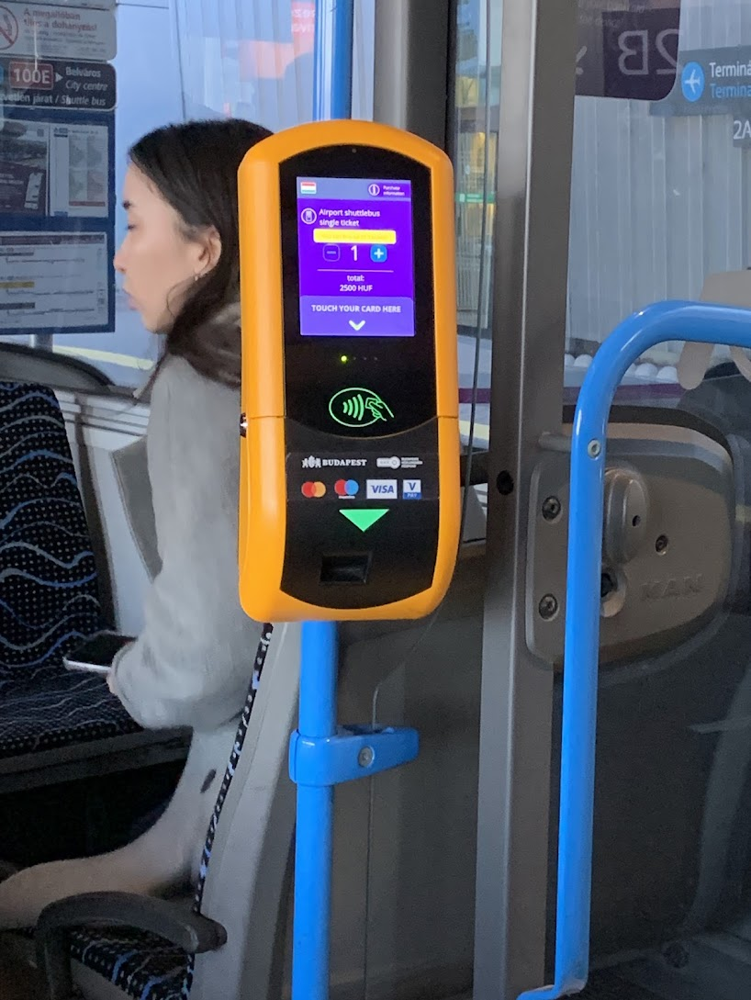

まずは100Eと200E＋M3を比較
初めての到着で乗り換えを減らしたい場合は100E、通常の定期券を使って費用を抑えたい場合は200E＋M3が候補です。宿泊先までの経路と到着時刻も合わせて選びましょう。
| ルート | 料金の考え方 | 使いやすい場面 |
|---|---|---|
| 100E Airport Express | 通常2,500 Ft／対象定期券所持者は条件付きで追加券1,000 Ft | 空港からDeák Ferenc térへ直通。24時間運行。約40分が目安。 |
| 200E＋地下鉄M3 | 通常の市内券・対応する定期券。単発券ならバス・地下鉄それぞれの券が必要。 | Kőbánya-Kispestで乗り換え。M3運行時間内の利用に便利。 |
料金確認：2026年10月9日。所要時間は渋滞・乗り換え・宿泊先で変わります。
100Eの乗り場と到着後の流れ
- 到着後、荷物を受け取り、ターミナルの公共交通・バス案内に従って外へ出る。
- 100Eの行先表示と乗り場を確認する。200Eと間違えないようにする。
- チケットを購入・有効化し、係員の案内に従って乗車する。
- Deák Ferenc térなど目的地に合う停留所で下車。宿泊先までの徒歩・地下鉄経路を確認する。
空港からの主な停留所はKálvin tér、Astoria、Deák Ferenc térです。市内から空港に向かう場合は停車条件が異なることがあるため、帰国時もBudapestGOで乗り場を確認しましょう。
車内でクレジットカード決済｜Pay&GO

100Eでは車内のPay&GO端末で、対応する非接触カードやスマートフォン・スマートウォッチを使って通常の空港専用券を購入できます。購入と同時に有効化され、紙の券は出ません。
- 端末の案内に従ってカードや決済端末をタッチし、購入完了表示を確認する。
- 検札時は購入に使った同じカード・端末を提示する。スマートフォンで払った場合はスマートフォンを使う。
- 複数人分を購入する場合は画面の枚数設定と案内を確認する（100Eは一度に最大5枚）。
対象定期券所持者向けの1,000 Ft追加券は、通常のPay&GO購入と別の商品です。BudapestGOで追加券を購入し、有効な対象定期券を提示したうえで乗車時に有効化します。
BudapestGO・窓口・券売機で買う場合
BudapestGOでは100E用の空港専用券を選び、乗車時に有効化します。空港のBKK窓口や券売機でも通常の空港専用券を購入できます。紙の券は案内に従って有効化し、到着まで保管してください。
券売機では言語を切り替え、「Airport shuttle bus single ticket」など100E用の券名と金額を確認して購入します。通常のSingle ticketや定期券だけでは100Eに乗れません。
追加券1,000 Ftの対象は有効なBudapest-pass（15日券を除く）、Pest County Pass、Hungary Passの所持者です。対象券の条件や購入方法はBKKの公式案内で確認しましょう。
節約するなら200E＋M3｜夜間は経路を再確認
空港から200EバスでKőbánya-Kispestへ向かい、地下鉄M3に乗り換えます。通常の対応定期券が使えるルートです。単発のSingle ticketの場合はバスから地下鉄への乗り換えに新しい券が必要なので、それぞれ有効化します。
M3は24時間運行ではありません。深夜・早朝は200Eと夜行路線の経路が変わるため、「200E＋M3でいつでも行ける」と考えず、到着時刻を入れてBudapestGOで検索してください。荷物が多い場合は階段・エレベーターと歩く距離も確認しましょう。
出発前に確認する公式情報
現役生に直接聞いてみる
通学や住まい、大学の手続きなど、その大学・都市での実際の状況を知りたい方は現役生に相談できます。
現役生を見る